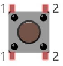

ESP32-S3 board
The brain that runs your uploaded sketch.
ESP32-S3 Lab · Day 5 of 30
Yesterday the LED glowed only while you held the button. Today it stays. The loop reads that button thousands of times a second, so the leap to a lamp is teaching it to fire on the single moment a press begins — the edge — to remember whether the light is on, and to shrug off the milliseconds a switch bounces as it closes. That's the jump from a raw button to a product.
TSK-DAY05-LAMP
Hand this to an agent so it can pull the lesson packet and coach you step by step.
01 First, know the pieces
Nothing new to buy — this is the exact circuit you built on Day 4. If it's still wired up, you only need to upload a new sketch. Tap Define on anything you'd like refreshed.
The brain that runs your uploaded sketch.

Spreads the pins into rows you can reach and label.

The lamp — same LED, same one-way rule as Day 4.

Still in series with the LED, keeping the current gentle.
Hold the button's pin steady between presses.

The same switch — now it toggles instead of holds.

Temporary, solder-free connections.

Uploads the new lamp sketch to the board.
02 Make the physical circuit
This is the Day 4 circuit, unchanged. Click the chart to enlarge, or skip straight to the sketch if your breadboard is still assembled — everything new today lives in the code.
Same circuit, same care. Nothing moves on the breadboard today. If you do rewire, keep the LED's long leg toward GPIO 2 through the 220 Ω resistor, and unplug USB first.
03 One action at a time
Mostly upload-and-watch — the wiring is yesterday's. Tap each step as you go to keep your place.
Confirm the Day 4 circuit is still wired, or rebuild it from the chart.
Keep USB unplugged until every wire matches the chart.
Open Sketch_02.2_TableLamp.ino in Arduino IDE.
Upload it to the ESP32-S3.
Press the button once and let go — the LED should latch on.
Press once more — it should turn off.
04 Read just enough code
The circuit is the same; the loop is what changed. It now catches the press at its edge, waits out the switch's bounce, and inverts the LED's remembered state on one clean press. Switch to MicroPython to see the same idea in Python.
void loop() {
if (digitalRead(PIN_BUTTON) == LOW) {
delay(20); // wait out the chatter
if (digitalRead(PIN_BUTTON) == LOW) {
reverseGPIO(PIN_LED); // clean press -> flip the LED
}
while (digitalRead(PIN_BUTTON) == LOW); // hold here until release
}
}
void reverseGPIO(int pin) {
digitalWrite(pin, !digitalRead(pin));
}delay(20)Waits out the switch's physical bounce, so the recheck below reads a settled level rather than mid-bounce noise. reverseGPIO(PIN_LED)Inverts the LED's own current level — on becomes off, off becomes on. That level is the state the lamp keeps between loop passes. while (digitalRead(PIN_BUTTON) == LOW);Holds here for the whole press, so the long LOW of your finger is consumed once. The loop reacts to the falling edge, then waits for release. Optional side path · same circuit
def reverseGPIO():
led.value(0 if led.value() else 1)
if not button.value():
time.sleep_ms(20)
if not button.value():
reverseGPIO()
while not button.value():
time.sleep_ms(20)time.sleep_ms(20)The same 20 ms pause to let the switch's bounce settle before the recheck.while not button.value()Holds until you release, so the press's edge registers exactly once.Same pins, same wiring, same behaviour. Run it in Thonny if MicroPython is set up; otherwise skip it — it should never block the Arduino-first path.
05 Understand, don't memorise
A press feels instant, but to the board it is a long stretch of time the loop reads over and over. Making one press flip the lamp exactly once means seeing the difference between the pin's steady level and the single moment it changes, holding the light's on/off state between loop passes, and getting past the switch's mechanical bounce. Those three ideas are the whole lesson.
loop() reads GPIO 13 thousands of times a second. At rest it reads HIGH; through the entire press it reads LOW. That reading is the level — the pin's state right now.
Flip the lamp whenever the pin reads LOW and it flips on every pass while you hold — hundreds of times before you let go. The level alone can't tell a tap from a long hold.
What you mean by a press is the edge: the single HIGH-to-LOW fall when the contact closes. One press has exactly one falling edge, so acting on the edge acts once.
The switch's metal contacts spring apart and back as they meet, so that one clean edge lands as a burst of edges over a few milliseconds. Left alone, one press reads as several.
The LED's own driven level is the remembered state. It stays put between loop passes, and each clean edge inverts it — so the lamp holds long after your finger is gone.
one clean falling edge → invert the remembered state → the lamp holds
The 10 kΩ resistor ties GPIO 13 to HIGH at rest, and a press pulls it to ground. So a press is a fall from HIGH to LOW — which is exactly the edge the sketch watches for.
It acts the instant it first reads LOW, then the wait-until-release line holds through the rest of the press. The long LOW of your hold is spent there and never counted again — one press in, one flip out.
The two metal contacts do not settle the instant they touch; they physically rebound a few times in a couple of milliseconds, like a dropped ball. The 20 ms pause lets them come to rest before the code rechecks.
06 Know it worked
Nothing prints today — the proof is whether the lamp stays without your finger.
A single press that flips twice is the switch's bounce slipping past — the 20 ms pause is what holds it back, which is exactly what the challenge lets you observe.
07 Make the idea yours
The two ideas behind the lamp are easy to see once you take each guard away for a moment. Work on a copy of the sketch, run both experiments, then restore the original — it fits inside today's time.
Comment out the while (digitalRead(PIN_BUTTON) == LOW); line, upload, and hold the button down. The LED strobes — the loop now flips on every pass it reads LOW, hundreds of times through your hold. Uncomment the line and a hold gives one clean flip again, because the loop acts on the falling edge and then waits for release.
Put that line back, then change delay(20) to delay(0) so nothing waits out the bounce. Press slowly a dozen times — now and then one press flips the lamp twice, because the board caught the contact's rebound as a second edge. Restore delay(20) and the double-flips stop.
08 Learn it with a hand on the tiller
Every lesson ships with a code and a machine-readable packet, so an agent can guide you with full context.
TSK-DAY05-LAMP
How the agent should behave: keep it to upload-and-watch on the existing circuit, and teach the real idea — the pin's steady level versus the edge of a press, the on/off state held across loops, and why a switch bounces. Check wiring, board, port, and USB before changing code.
Keep your place
Mark it complete — it shows on your course map, and your place is saved on this device.